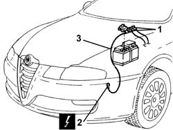

5530B22 BATTERY EARTH LEAD - R+R
- Path
- Procedures > 55 ELECTRICAL EQUIPMENT > 5530 CURRENT GENERATOR > 5530B BATTERY AND LEADS > 5530B22 BATTERY EARTH LEAD - R+R
- Kind
- repair procedure (removal / refitting; the operation number is the code)
- Applies to
- all engines; all production periods
- Interactive page
- https://sloeber94.github.io/elrnDB-aGt/en/#/125001641
Applies to: all engines; all production periods
 Removing
Removing
 Refitting
RefittingEnsure that the ignition key is in OFF position, then disconnect the earth lead from the battery.
Name | Connector | |
|---|---|---|
1 | Battery | See A1B BATTERY ( BATTERY NEGATIVE ) |
1. Undo the nuts and disconnect the electrical connections from the battery earth lead terminal.
2. Disconnect the battery earth lead from the power unit.
Name | Connector | |
|---|---|---|
2 | Battery earth on engine | See C2 BATTERY EARTH ON ENGINE ( BATTERY NEGATIVE ) |
3. Remove the battery earth lead.

Applies to: all engines; all production periods
Refitting
RemovingPlace the battery earth lead back in its housing.
Connect the battery earth lead to the power unit.
Connect the electrical connections to the battery earth lead terminal and tighten the nuts.
Connect the earth lead terminal to the battery.